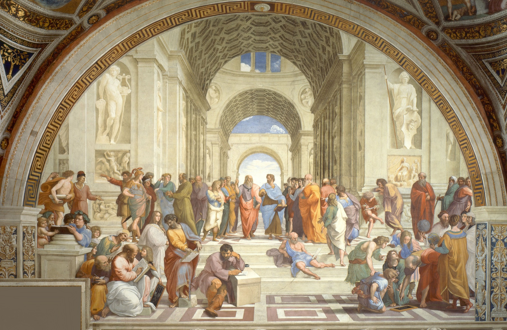

RENAISSANCE / Ons verhaal
Een nieuw
hoofdstuk.
Opnieuw beginnen. Met het verleden als inspiratie en de blik vooruit.
Dat is het idee achter RENAISSANCE. Een kledingmerk dat de belangstelling voor kunst en cultuur vertaalt naar iets wat je elke dag kunt dragen.
Ontdek ons verhaal
De oorsprong
The Art
of Renewal.
Een naam die staat voor hernieuwde aandacht.
De naam RENAISSANCE verwijst naar de periode waarin de belangstelling voor kunst, wetenschap en cultuur uit de klassieke oudheid herleefde. Het verleden werd opnieuw bekeken en kreeg een nieuwe betekenis.
Dat idee nemen we mee in ons merk: inspiratie hoeft niet nieuw te zijn om iets nieuws te laten ontstaan. Een kleur uit een schilderij, een lijn uit de architectuur of een oud symbool kan het begin zijn van een hedendaags ontwerp.
Onze vertaling is eenvoudig: rustige kleding, een herkenbaar teken en ruimte om er je eigen verhaal aan te geven.

Onze lelie
Een herkenbaar
teken.
De fleur-de-lis is het herkenningspunt van RENAISSANCE. Een eenvoudig silhouet met zacht vervaagde randen, dat ook zonder de merknaam voor zichzelf kan spreken.
In het eerste longsleeve-ontwerp krijgt de lelie een kleine plek op de linkerborst. De rest blijft rustig: effen mouwen, een effen rug en een rechte, licht ontspannen pasvorm.
The Past Wears Forward.
Het eerste hoofdstuk
Begin Again.
Eén longsleeve. Vier kleurvarianten.
Het begin van RENAISSANCE.